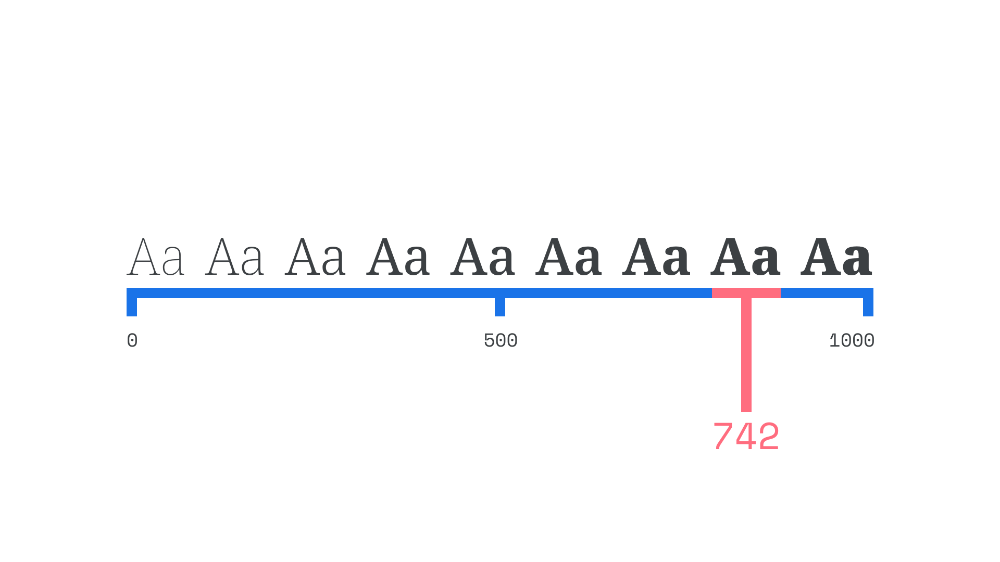

Instance
By Google Fonts Knowledge contributors · Google Fonts Knowledge.
Original article · Source on GitHub · CC BY-SA 4.0. Text, illustrations and existing credits reproduced from the licensed Knowledge repository. Open Shelf adapted the layout and links; these adaptations are also CC BY-SA 4.0. No endorsement implied.
An instance is a position on a variable font’s axes, akin to the weights or widths or styles in non-variable fonts.

The weights and styles of a non-variable typeface can be regarded as instances, too. The difference with variable fonts is that we can access all of the styles in between those traditional delineations. For example, if a medium weight is too light for our needs, and a bold is too heavy, then a variable font with a weight axis lets us choose from hundreds of instances in between medium and bold.
Named instances—for example, “Recursive Light”—are fixed positions on a weight axis defined by the type designer. We can jump to this instance (and therefore position on the axis), or choose to push the slider further so that the weight sits between pre-defined named instances.